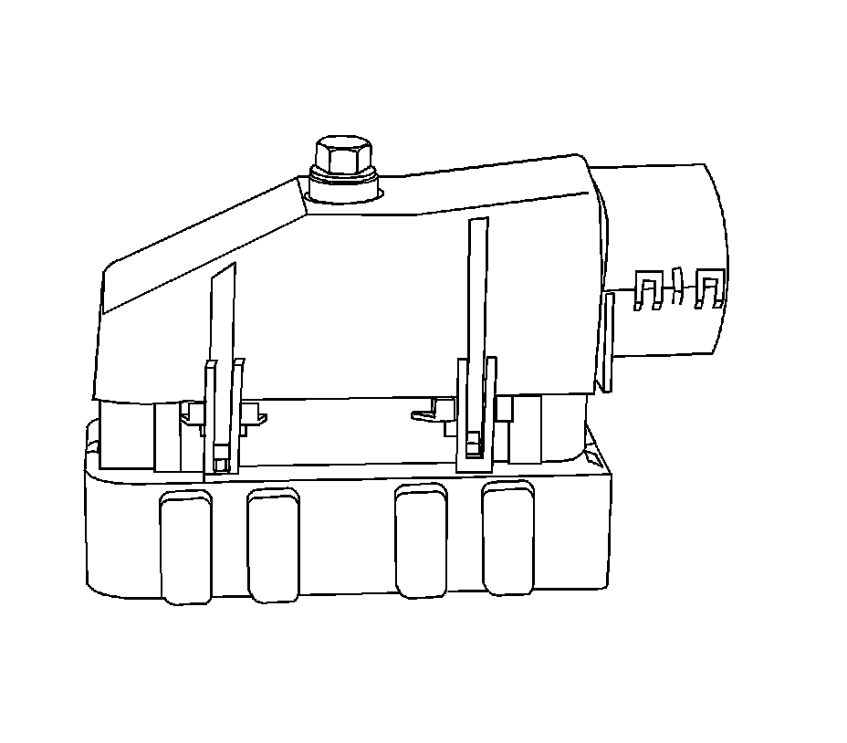
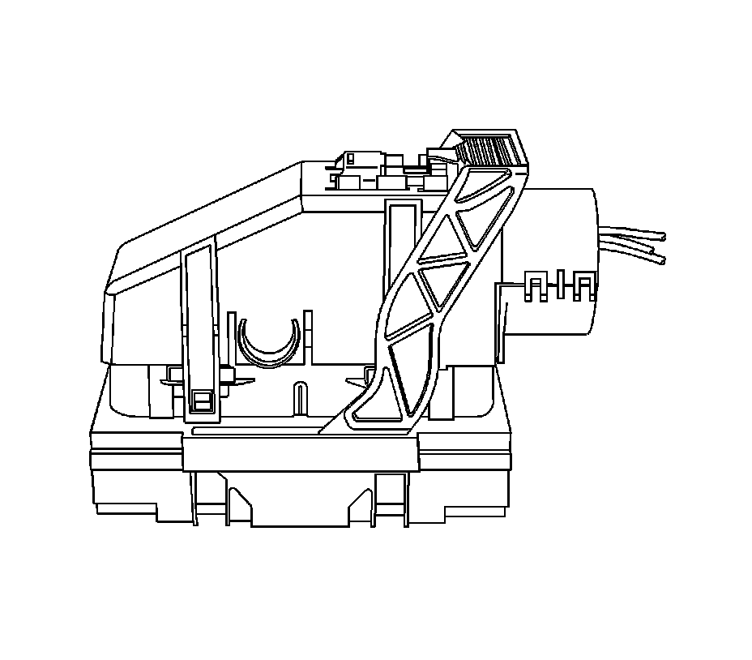
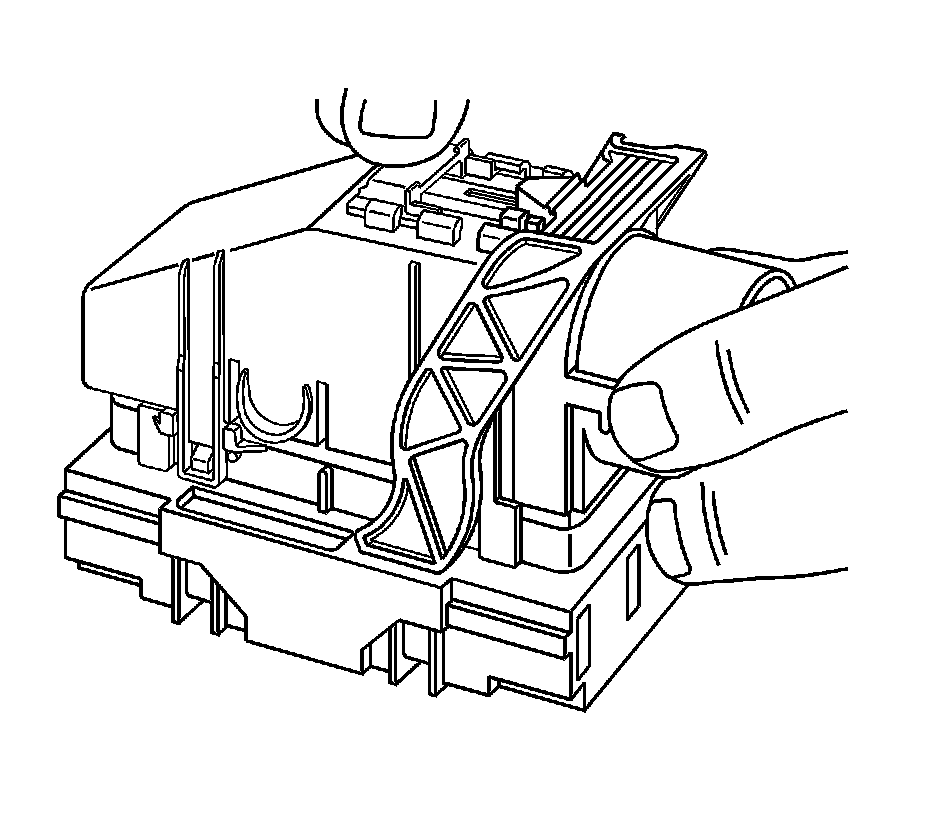
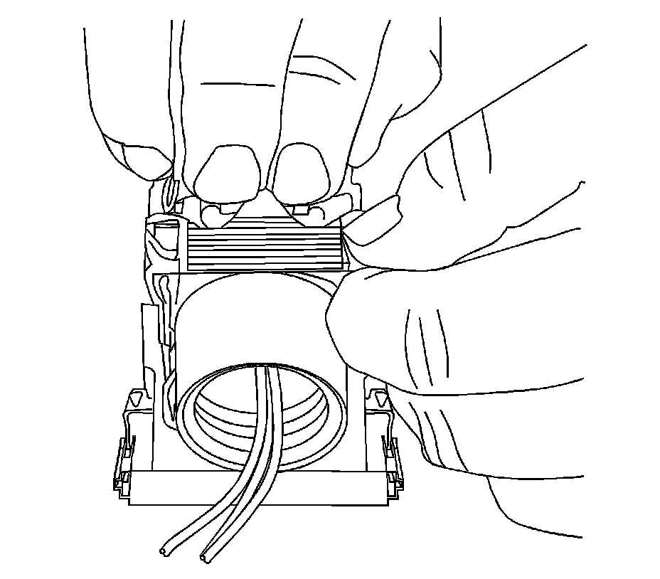
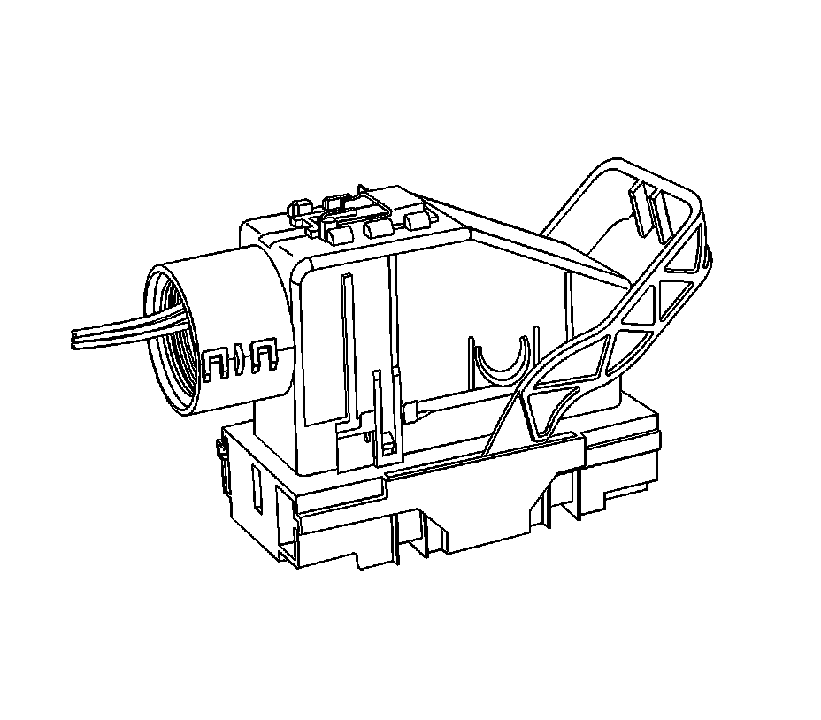
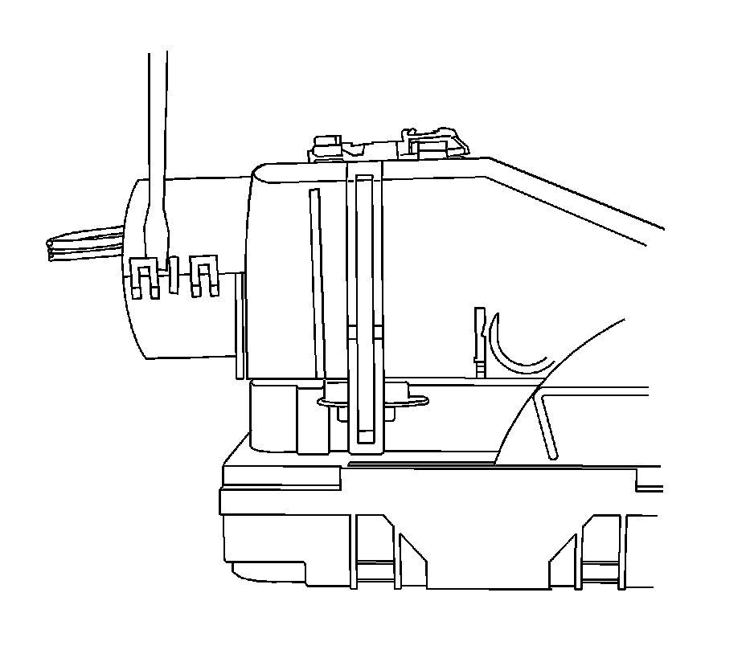
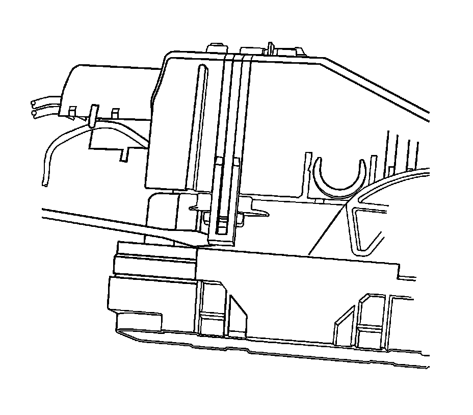
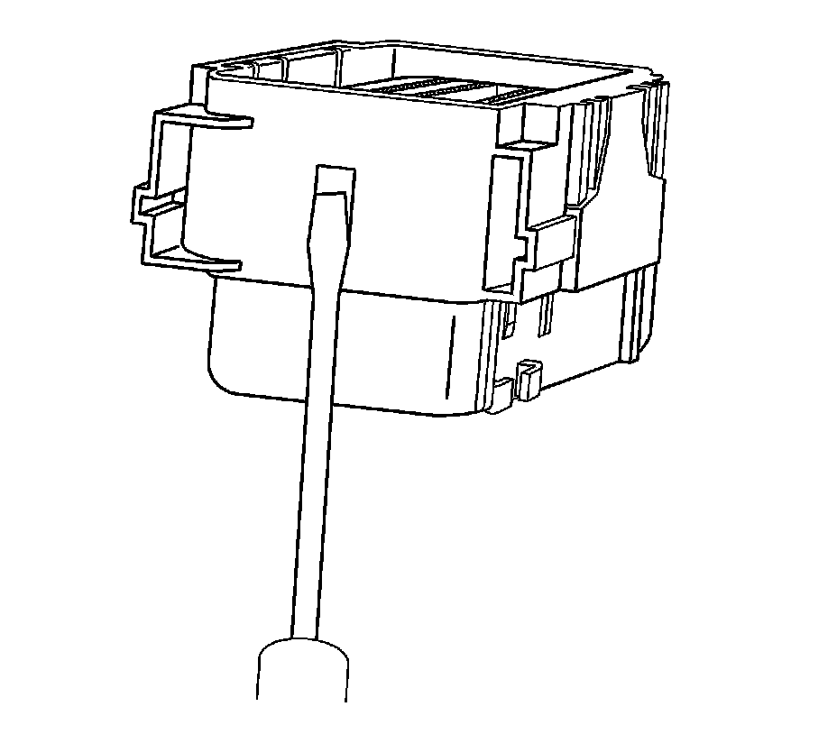
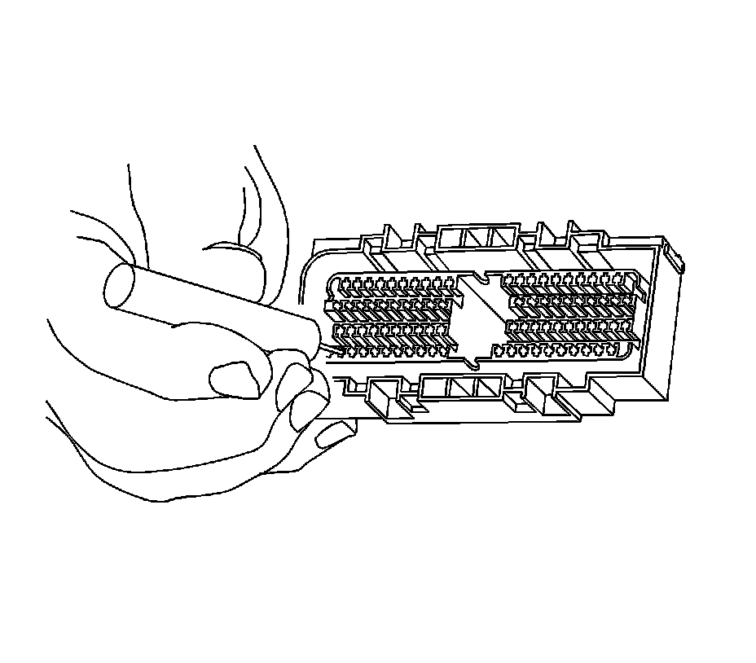

AFL/ECP Connectors
AFL/EPC CONNECTORS
TOOLS REQUIRED
J-38125 Terminal Repair Kit
REMOVAL PROCEDURE
Follow the steps below in order to remove terminals from the connector.

1. For connectors with a bolt in the dress cover, turn the bolt counterclockwise to remove the connector from the component.

2. Locate the connector position assurance (CPA) on the top of the wire dress cover. Slide the CPA forward.

3. Slide the lever lock forward while pressing down on the lever lock release tab.

View showing depressing of the lever lock release tab.

View of connector in released position.
4. Disconnect the connector from the component.
5. Locate the dress cover locking tabs at the corners of the dress cover. Use a small flat-blade tool to release the locking tabs and remove the dress cover.

Release the rear lower half of the wiredress cover.

Release the tabs that are holding the wiredress cover to the connector body.
6. Remove the nose piece by inserting a small flat-blade tool into the slots on both ends of the connector body. Gently pry the nose piece out of the connector. J 38125-216 can also be used to remove the nose piece.

Use the J 38125-12A (GM P/N 12094429) tool to release the terminals by lifting the terminal retaining tabs on the inside of the connector. See the release tool cross reference in the Reference Guide of the J-38125 to ensure that the correct release tool is used.

7. While holding the removal tool in place, gently pull the wire out of the back of the connector. Always remember never use force when pulling a terminal out of a connector.
REPAIR PROCEDURE
Use the appropriate terminal and follow the instructions in the J-38125.
Location of the terminal in the repair tray and the proper crimp tool can be found in the appropriate connector end view.